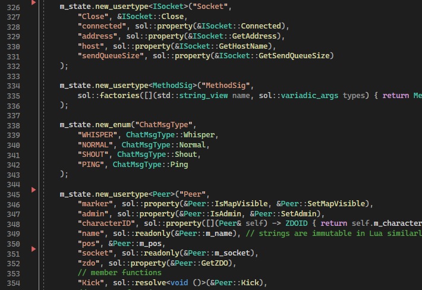

Here are some misc features and/or tidbits of the server:
- Basic config.yml arrangement:
- How the Lua API is defined:

- Lua API example usage:
- Console output:
- Mods which normally work with Valheim do not work with Valhalla, but they can be manually ported to
work (assuming they follow the mod specification):

Mods require a modinfo.yml file, which must describe the path of the main mod Lua file